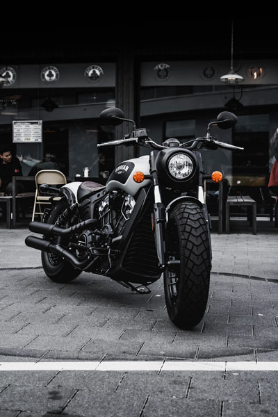

BACK IN BLACK


It made the great first impression on me when i first rode it back in december 2026,despite several weaknesses (wimpy brakes, a pogo stick fork and that small gas tank) Its sol smooth and powerful-a complete package--that i was forced into calling a draw when it came down to choosing between the triumph and the indian scout bobber in a recent bobber coparo(rider,january 2017 and on riderma-magazine.com). If I'd had this new bobber black version,how ever well,who knows